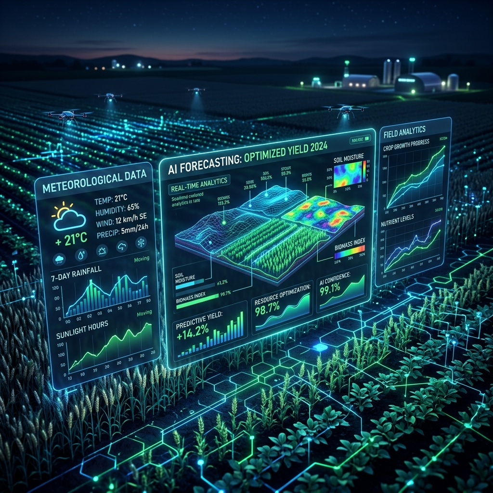

SmartAgroPredictor
VAR | Stacked LSTM | Machine Learning
Engineered an advanced agricultural forecasting system utilizing Vector Autoregression (VAR) and Stacked LSTM neural networks, analyzing high-dimensional environmental data to optimize crop yield predictions.